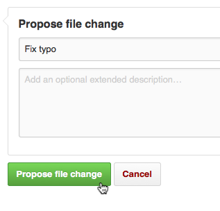
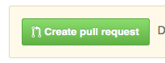

'Working Open' Project Guide

Hello There!
Welcome to Mozilla Science Lab's Working Open Guide. This guide was created by MSL's core team, along with our broader community, to introduce you to "working open" and provide a framework and resources for running sucessful open science projects. In a nutshell, working openly enables a community of skilled contributors to collaborate and build together, making better, more useful products and research. Sounds great, right?
Who is this Working Open Guide For?
This guide was created for researchers, grad students, professors, citizen scientists.. The Working Open Guide is for anyone who is interested in leading or contributing to an open science project, or just learning more.
If you're completely new to "open", section x of this guide will help you understand what working open means, with special attention to working open in the sciences and scientific research. If you've got a pretty good handle on what "open" is and means, and want to dive right into the details of designing and running an open project, skip ahead to section x. If you've got a project up and running and want to grow an strong community of contributors, head over to section x.
About the format
This guide can be used step-by-step manual, read from start to finish. Or, you can jump to any section that's most useful to you. You'll notice each section starts with a list of prerequistes for the material, a set of learning goals for that section; we also specify amount of time (roughly) it should take you to complete that section. You'll find a glossary at the end of each section to define key terms.
Not only is this book about working open, it IS open.
We encourage you help us improve the guide by adding to and editing the content. To do so, you'll need to know a bit about GitHub, which is a free tool (often used by software developers) for working collaboratively and sharing content and code. GitHub is introduced in section x of this guide, and you can find a good intro tutorial to GitHub here. Once you have a GitHub account and some basic skills with the interface-- check out our "good first bugs" for the Working Open Guide-- these are tasks we need your help with that are good on-ramps for new contributors. Instructions for contributing are below.
Help Us Make This Book
To add content to this book, follow these steps:
- On the page you want to edit, click on the 'Edit' button at the top of the page
- Make your edits in the GitHub interface. When you're done, scroll down and add a commit message summarizing your changes
Click on the 'propose file change' button

Hit the 'Create pull request' button, make sure everything looks good, then hit 'Create pull request' again

This will open a discussion on your proposed changes. If your pull request is merged in, you'll see your changes appear here.
Feedback
Are we missing anything? Have a comment? Let us know what you think.
Table of Contents
- Why Open?
- Project Setup
- Working with Contributors
- Getting Unstuck
- Maintaining Momentum
- Further Reading
- Edit this Book
License

This work is licensed under a Creative Commons Attribution 4.0 International License.